WHERE TO FIND ME? ୨ৎ
I am Nicole but I really prefer to be called Nix, currently a 2nd yr BSIT student at PUP–Parañaque campus.
Nothing much about me, but I’d say I get along easily with people. I tend to look super serious because of my resting face so people often think I am “masungit” or unapproachable—and honestly sometimes that can be a bit of a pro for me since I’m not really an extrovert.
My college life feels like a roller coaster ride, and it has been a bit bittersweet lately. The past few months have been challenging, but I’m really trying, thanks to my friends who have been my support.
One thing about me is that I can be the loudest in the group, but at the same time, I love being in quiet spaces. I enjoy being alone whether I’m eating, reading, watching, or just walking around.
I believe we can never go back in time, so taking pictures helps me hold on to the memories that I really value. Also, I’m really into volleyball. I used to play, but I got injured and haven’t been able to go back since.
And when it all gets too much, volleyball and music become my safe space where I can just breathe and recharge.
scroll down to see more :)
✦ Photos are clickable ✦
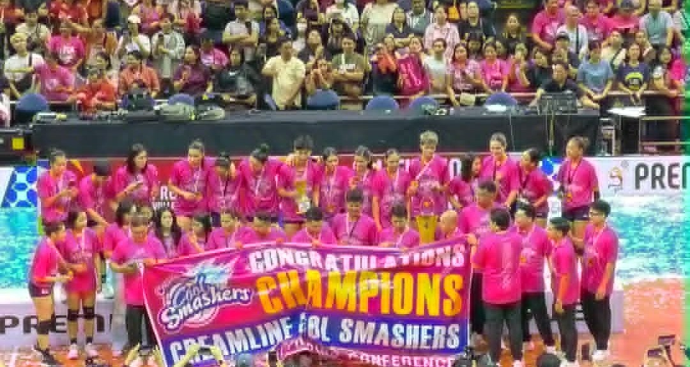
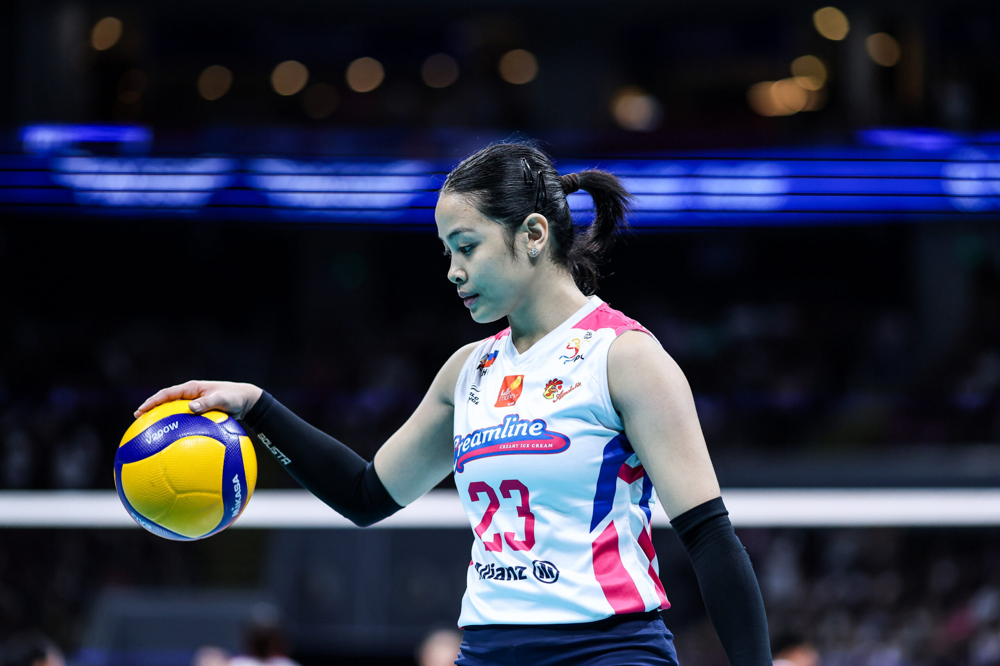
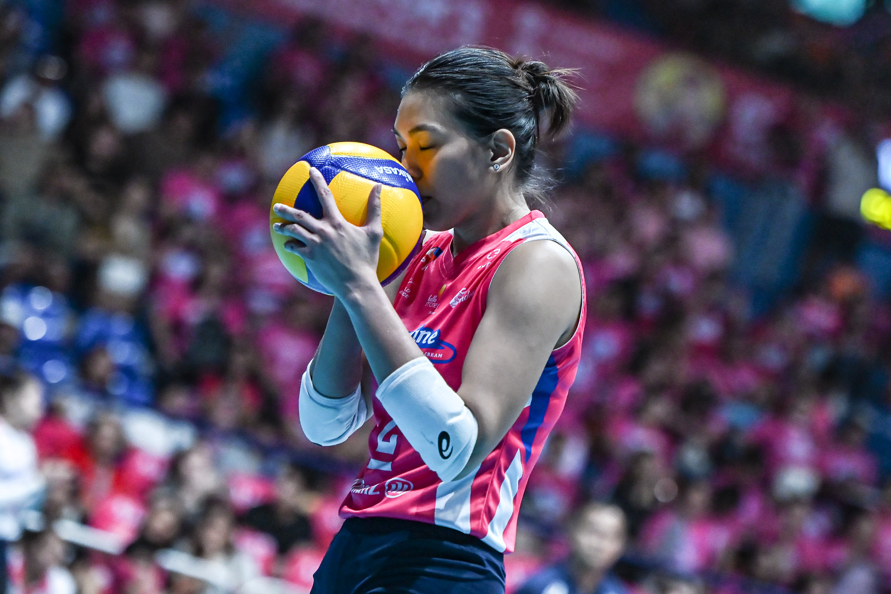

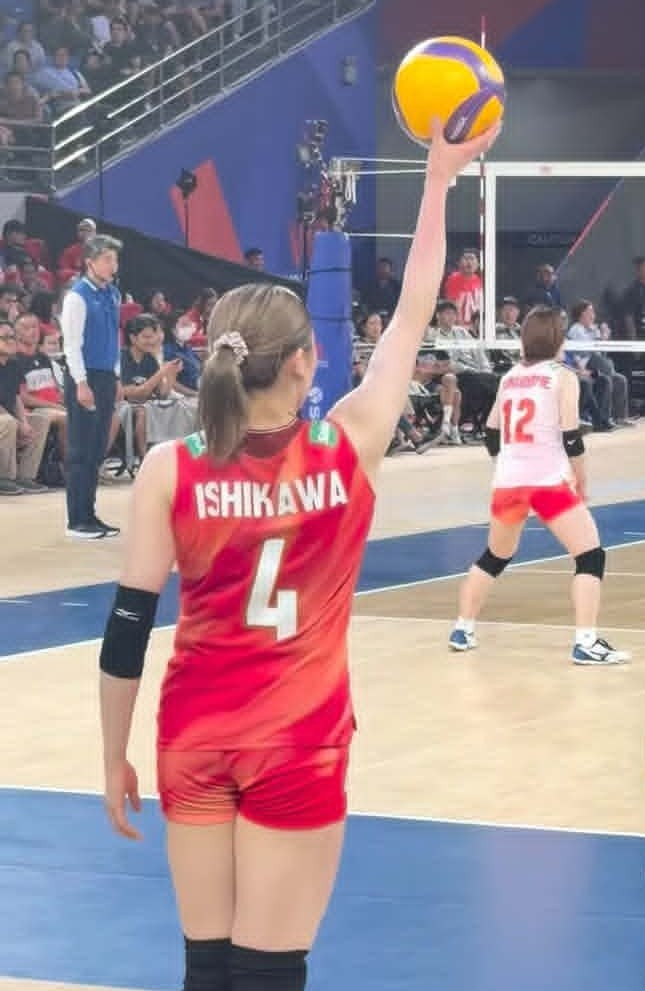

Volleyball is one of the things that genuinely makes me happy.These first six photos are close to my heart as the moments captured in these photos reminds me of the joy, inspiration, and comfort that the sport brings me.
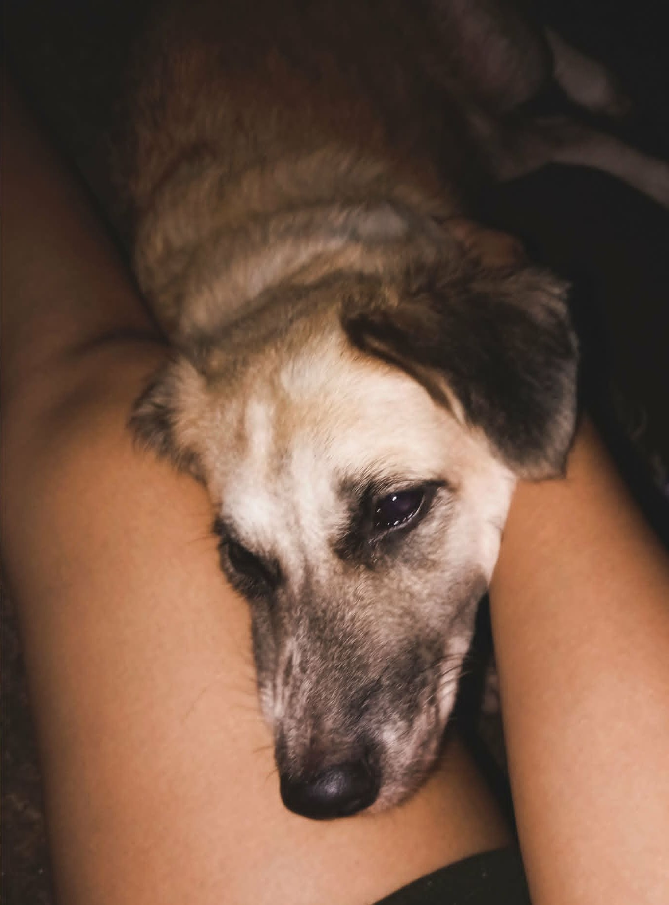
current photo i have of my dog, this feels so special as during that time i really felt the love that this dog has for me.
.jpg)
.jpg)
I've always been drawn to sunsets and sunrises, so photos like these feel especially meaningful to me. There's something comforting about watching the sky change colors, reminding me that even the simplest moments can be the most beautiful.

Fear Street

Barbie Movies

Modern Family

Young Sheldon
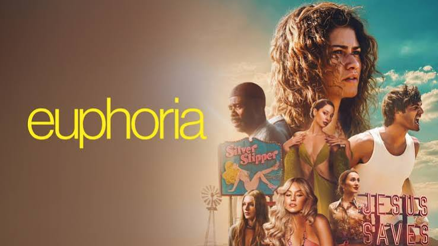
Euphoria
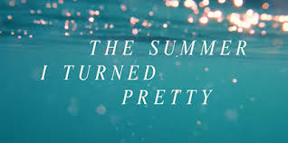
The Summer I Turned Pretty
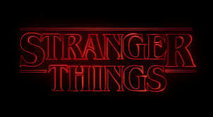
Stranger Things

You've Reached
Sam

Onyx
Storm

Save
Me

The Lonely
City
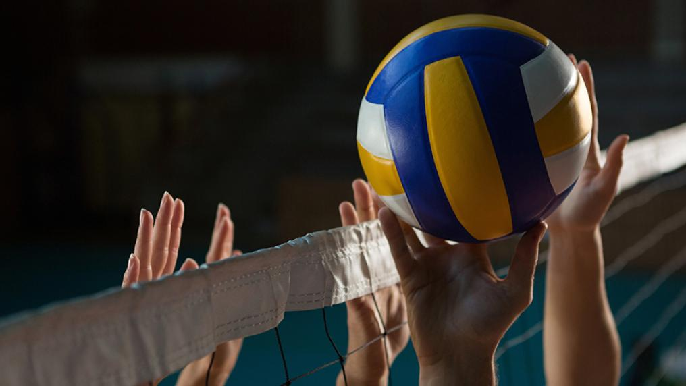
Volleyball
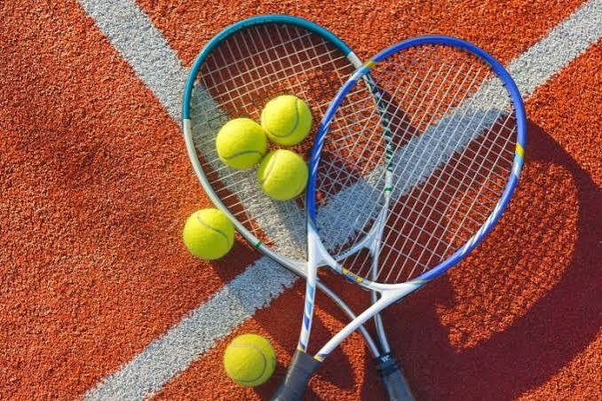
Tennis
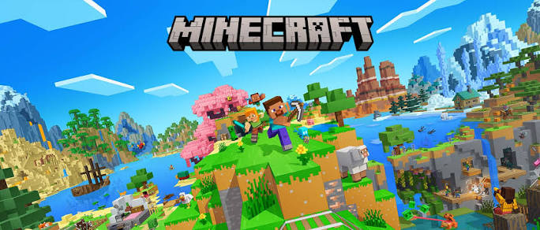
Minecraft
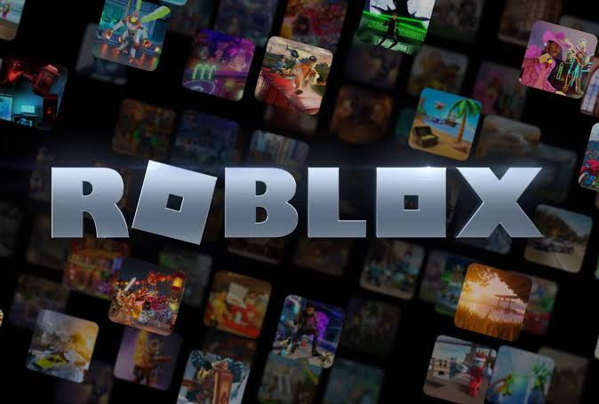
Roblox
.png)